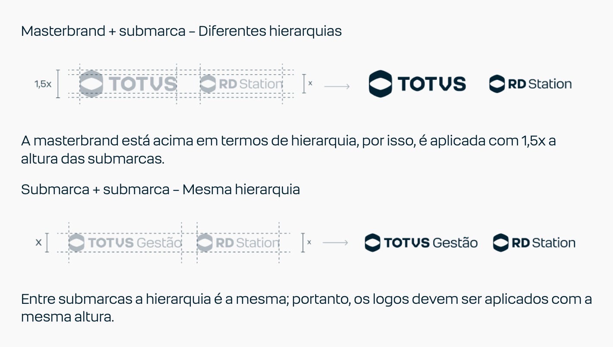

Quando masterbrand e submarcas convivem numa peça, seguimos diretrizes de escala e posição. Masterbrand + submarca: a masterbrand é prioritária — vai sempre à esquerda e com 1,5× a altura da submarca. Submarca + submarca: mesma hierarquia, mesma altura; a de maior protagonismo fica à esquerda.
